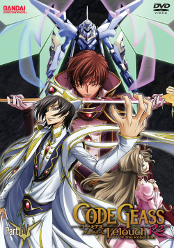

Code Geass

Na primeira temporada de Code Geass, Lelouch, um príncipe exilado, recebe o poder do Geass e assume a identidade de "Zero" para liderar uma revolução contra o império Britannia. Ele busca vingança e criar um mundo melhor para sua irmã Nunnally, enquanto enfrenta dilemas morais e confrontos com Suzaku, seu amigo de infância. A temporada culmina na morte de Euphemia e reviravoltas que moldam o futuro da luta.
Estágio 1: O Dia em que o Demônio Nasceu

No primeiro episódio de Code Geass, Lelouch, um príncipe exilado de Britannia, ganha o poder do Geass, que lhe permite controlar a vontade de outras pessoas. Ao encontrar C.C., uma misteriosa jovem, ele decide usar sua habilidade para destruir o império Britannia. Lelouch assume a identidade de "Zero" e começa sua jornada de vingança e rebelião. Ele planeja criar um mundo melhor para sua irmã, Nunnally.
Estágio 11: Batalha por Narita

A luta entre a Ordem dos Cavaleiros Negros, liderada por Zero, e o Império Britannia atinge um novo nível. A cidade de Narita se torna o palco de um confronto intenso, com os Cavaleiros Negros tentando conquistar a cidade estratégica. Lelouch, com sua habilidade de manipulação e estratégia, enfrenta grandes desafios enquanto lida com os dilemas de suas ações. O episódio destaca a batalha pelo controle de Narita e o impacto da guerra sobre os civis e soldados.
Estágio 22: Euphy Banhada em Sangue

Lelouch enfrenta uma situação devastadora quando sua irmã, Euphemia, é tragicamente manipulada por seu poder do Geass. Durante um evento para promover a paz entre os britannianos e os japoneses, uma tragédia acontece e Euphemia, descontrolada, começa a massacrar civis. Lelouch, em uma tentativa de salvar a situação, é forçado a tomar decisões cruéis, resultando em uma das cenas mais impactantes da série, com grandes consequências para seus planos e seu relacionamento com os outros personagens.
Estágio 23: Ao Menos a Tristeza me Acompanha

Após o massacre causado por Euphemia, Lelouch assume a responsabilidade e a mata para impedir mais tragédias, marcando um ponto de não retorno. Enquanto isso, Suzaku, devastado pela perda, jura vingança contra Zero, intensificando o conflito entre os dois amigos. Lelouch enfrenta as consequências emocionais e estratégicas de seus atos, consolidando seu papel como líder rebelde.
Estágio 24: O Palco em Colapso

A batalha final entre os Cavaleiros Negros e Britannia começa, com Lelouch e Suzaku se enfrentando diretamente. Enquanto Lelouch luta para proteger Nunnally e manter seu plano de revolução, a situação foge do controle quando o poder do Geass leva a eventos inesperados. O caos toma conta, deixando Lelouch em uma posição perigosa.
Estágio 25: Zero

Lelouch confronta seu pai, o Imperador de Britannia, enquanto a batalha entre os Cavaleiros Negros e Britannia atinge seu clímax. Suzaku captura Lelouch, e revelações sobre suas intenções e o verdadeiro propósito do Geass vêm à tona. O episódio termina em um confronto tenso e um destino incerto para todos os envolvidos.
Code Geass R2
Na segunda temporada de Code Geass, Lelouch, agora conhecido como Zero, continua sua luta contra o império Britannia, enfrentando novas ameaças e alianças. Ele busca realizar seu plano final de destruir o império, enquanto lida com traições, revelações sobre seu passado e o impacto de suas escolhas. A temporada culmina em um sacrifício definitivo de Lelouch para garantir a paz, encerrando sua jornada com uma reviravolta emocional.
Turno 13: Assassino do Passado

Lelouch e seus aliados enfrentam uma nova ameaça quando um assassino misterioso começa a atacar membros da resistência. Enquanto isso, a identidade de Zero continua a ser um ponto de tensão, e as motivações de Lelouch entram em conflito com as de seus amigos e inimigos. O episódio também explora o passado de Suzaku e as razões por trás de suas ações, trazendo à tona velhos traumas e dilemas morais. As alianças se complicam, e o cenário político se torna ainda mais instável, deixando todos em uma situação de grande perigo.
Turno 19: Traição

As tensões aumentam à medida que as lealdades começam a ser desafiadas. Lelouch enfrenta uma traição inesperada dentro de seu próprio grupo, o que coloca em risco seus planos e sua posição como líder dos Cavaleiros Negros. A luta pelo poder entre diferentes facções atinge novos patamares, enquanto as estratégias de Lelouch se tornam mais arriscadas. O episódio também destaca o conflito interno de vários personagens, como Suzaku e Kallen, que se veem forçados a fazer escolhas difíceis. A traição abala a confiança e muda o rumo da guerra.
Turno 21: A Conexão Ragnarok

Lelouch e os Cavaleiros Negros enfrentam um novo estágio em sua luta contra Britannia. A trama revela mais sobre o plano de destruição em massa envolvendo o "Ragnarok", uma conexão crítica que ameaça mudar o curso da guerra. Lelouch precisa tomar decisões arriscadas para impedir que seus inimigos tomem a dianteira, enquanto a verdade por trás de certos personagens e eventos começa a se desvelar.
Turno 22: Imperador Lelouch

Lelouch assume o trono de Imperador da Britannia após um golpe estratégico, posicionando-se como líder absoluto do império. No entanto, sua ascensão traz novos desafios, incluindo o confronto com seu irmão Schneizel e as consequências emocionais de suas escolhas. Enquanto luta para criar um novo mundo, Lelouch enfrenta tensões políticas e militares, sabendo que o poder traz consigo grandes sacrifícios e dilemas.
Turno 24: O Céu de Damocles

Neste episódio, Lelouch usa o satélite Céu de Damocles como uma ameaça para garantir a rendição global das nações, reunindo uma coalizão de forças contra a Britannia. Ao mesmo tempo, ele confronta a inevitabilidade do seu plano e a necessidade de tomar medidas drásticas para alcançar a paz. O episódio foca em sua estratégia para finalmente estabelecer um novo mundo, mas também revela os pesados sacrifícios que ele precisa fazer para garantir a vitória, levando a um confronto com aqueles que estavam ao seu lado e abrindo caminho para o clímax da série.
Turno 25: Re;

O episódio lida com os últimos momentos de Lelouch, suas decisões finais e o impacto de sua busca por vingança e poder. As lealdades e relações entre os personagens são testadas até o limite, culminando em um sacrifício que altera para sempre o curso da história. "Re;" traz uma conclusão intensa e emocional à jornada de Lelouch, encerrando a série com um final cheio de reviravoltas e reflexões sobre os temas centrais de poder, sacrifício e redenção.